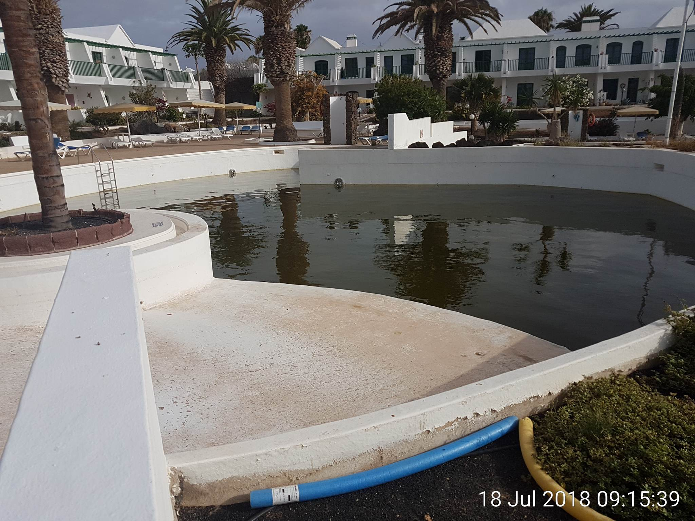
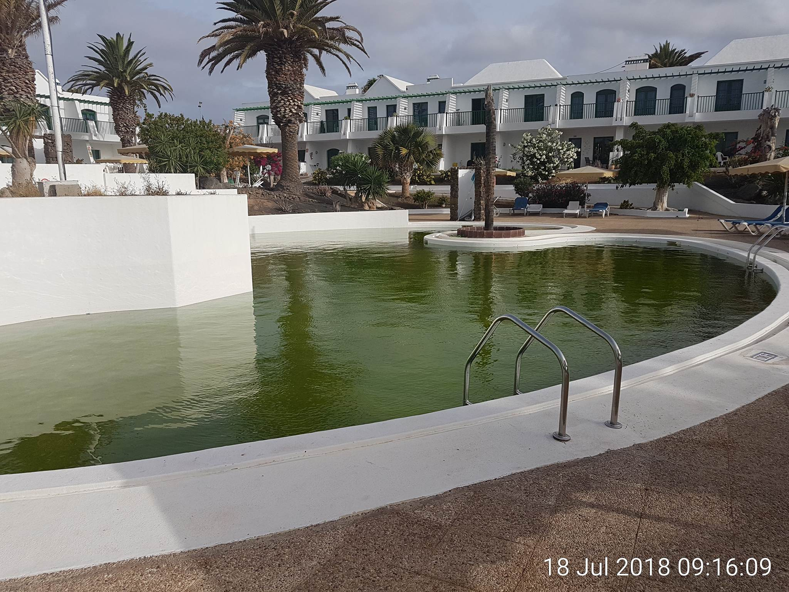
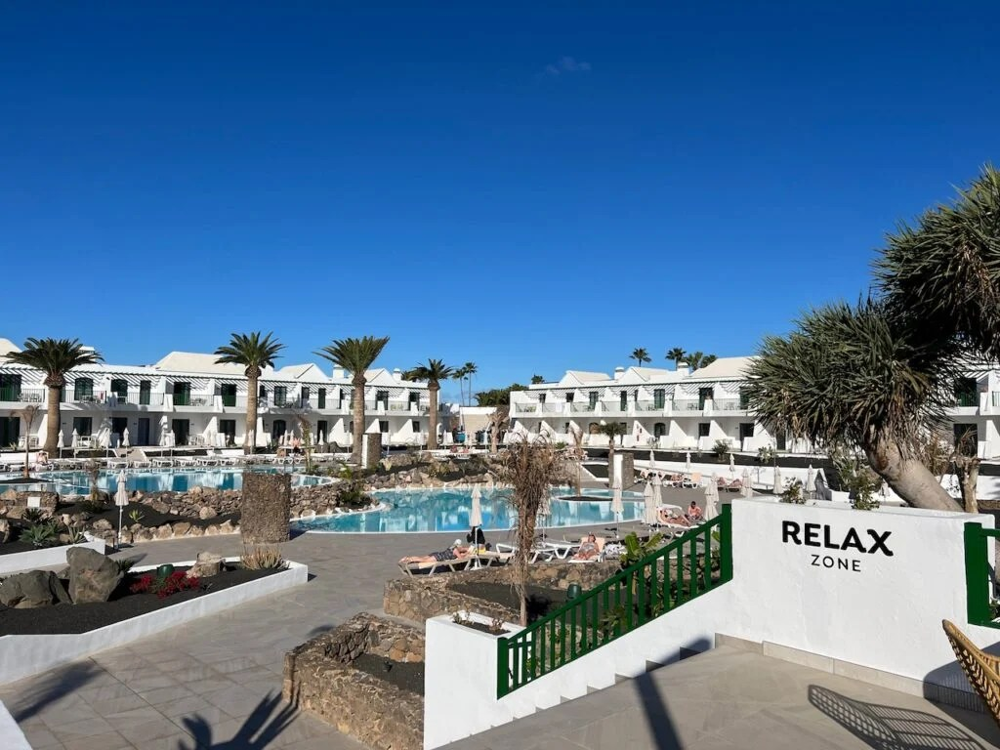
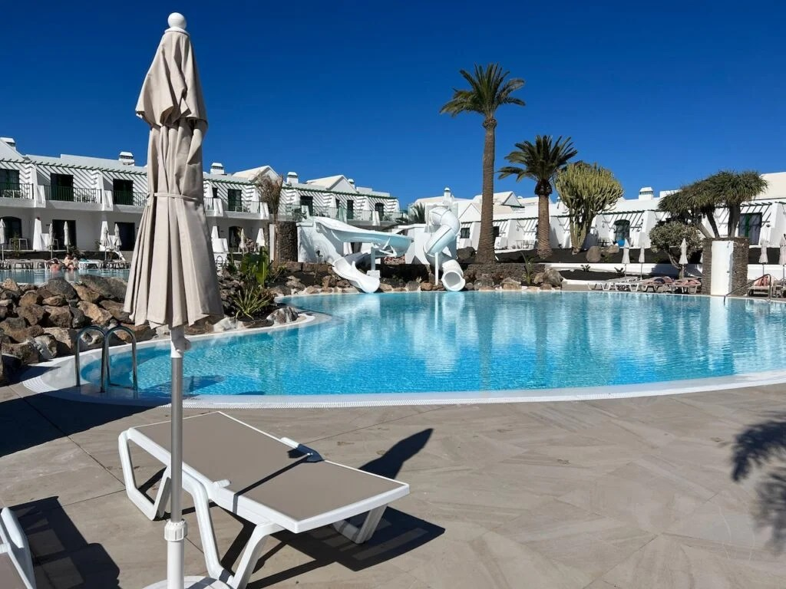

Former Sunpark
Camel’s article says MYND opened after an extensive €12 million refurbishment “from what was Sunpark”.
Open Camel’s page →Side record · downstream reputation and booking promotion · updated 13 August 2026
Lanzarote Information published Mike’s highly adverse account under the old Sun Park name. Camel Travel—operated by Julie and Mike—published Julie’s favourable article about the refurbished same property as MYND Yaiza and invited readers to request a quotation. The overlap is documented. Its reason is not.
Why this side record exists
The Cliffe-Jones couple are not identified here as central actors in the 7 June takeover. This page records a narrower downstream contrast: severe reputational content remained attached to the predecessor name while the successor hotel received favourable visibility and a booking-enquiry route through businesses run by the same couple.
The issue is not that 2018 photographs and post-refurbishment photographs showed different physical conditions. A major refurbishment occurred. The issue is the unequal context, commercial direction and continuing search footprint attached to the two names.
Lanzarote Information retained adverse material under Sun Park; Camel Travel invited readers to request a quotation for the same property as MYND Yaiza. The publication contrast is proved. Project Sun Rock’s position is that this asymmetry formed part of the wider loss-and-gain pattern at our direct expense; its causal and monetary contribution remains unquantified. Whether it resulted from independent editorial judgment, the 2017 commercial rupture, the couple’s own incentives, a relationship benefiting the successor project, or several reasons together remains open.
The sequence in six records
The chronology matters because the later editorial treatment did not begin in a commercial vacuum. It also prevents the later contrast from being overstated: prior payment did not purchase permanent favourable coverage, and a payment dispute does not prove retaliation.
Connected records document payment from 2013, favourable content, advertising, visits, a joint guide, lead activity, marketing proposals and a travel-packaging introduction; the May 2017 record identifies one invoice as unpaid.
Connected originalsMike said Lanzarote Information had worked for and recommended Sun Park for years, while complaining about an unpaid advertising invoice and unanswered proposals.
Contemporary emailMike’s Lanzarote Information article reported Sun Park admission and booking concerns and displayed two pool images the page says were supplied to it and taken on 18 July 2018.
Live page + archiveThe archived page contains a severe fraud-related editorial conclusion. It is not an identified judicial finding.
Archived publicationJulie’s Camel Travel article presented MYND Yaiza favourably, expressly connected it to former Sunpark and invited readers to request a quotation.
Publication + archiveThe Internet Archive preserved the adverse Sun Park page at 08:02:29 UTC and the favourable Camel page at 08:05:27 UTC.
2m 58s apartIdentity control
The continuity is described by the publishers, MYND’s first-party account and the published BORME notice. Visual resemblance is not needed to make the link.
Camel’s article says MYND opened after an extensive €12 million refurbishment “from what was Sunpark”.
Open Camel’s page →MYND’s official page describes the project to modernise the Sun Park apartments and convert them into MYND Yaiza.
Open the hotel account →The 2022 notice identifies the Sun Park complex, its transformation and later hotel operation under the name MYND Yaiza.
Open the official notice →Simultaneous public presentation
Both pages could be historically accurate about different eras and still create an asymmetric reputational and commercial result. The question is how the two contexts were selected and whether any relevant relationship or incentive was left undisclosed.


Lanzarote Information says it was sent these photographs and that they were taken on 18 July 2018; the times are visibly burned into the source images. Its later summary calls the episode a “money making scam” and a “long con”. Photographer and chain of custody are not identified on the page.


Camel labels these “MYND Yaiza Relax Zone” and “Family pool with slides”; its WordPress media records report the upload times shown above. Julie's article calls the hotel modern, describes a “chilled ambience” and invites readers: “We’d love to help you book a stay”. It was published at 11:03:44 UTC that day.
Public business record
This is a concise business biography, not a claim that every brand had the same legal operator or that every activity is relevant to the publication contrast.
The couple's own account says they moved from the UK to Lanzarote in 2001.
They say they founded Estupendo as a long-term rental agency, expanded into property and business sales, and sold it in the late 2000s.
Their “Our Story” page says they launched the destination website in December 2008.
UK public filings list Julie and Michael Cliffe-Jones as directors from incorporation on 15 September 2014 until voluntary dissolution on 17 September 2024.
They say Camel Travel launched in 2015. Current Camel disclosures describe a Your Holiday Booking brand/administration and Co-op/Midcounties consortium or travel-selling chain; the notices describe different legal capacities.
A 23 January 2019 New Horizons capture shows a group member recommending Julie's Camel Travel booking service and the administrator arranging to admit her. On 20 February 2023, the administrator—not Mike or Julie—shared Camel's MYND post with the private former-Sun Park group; the preserved capture says it was seen by 93. This proves member-led introduction and third-party circulation. The Gmail and Drive search found no direct evidence that either Cliffe-Jones founded or administered New Horizons, instructed the repost, exported group data, solicited a member, redirected anyone to MYND or another hotel, completed a booking or received commission.
Business loss / reputational gain
Project Sun Rock’s position is that this illustrates one way predecessor goodwill can remain burdened while a successor project receives market normalisation and a potential booking route. Traffic, causation, lost opportunities, enquiries, bookings and commissions have not been quantified.
Limit: traffic, causation and monetary loss are not yet quantified.
Limit: no completed booking, payment or commission is presently proved.
Gil Marer characterises the documented pattern as a “double game”: one publishing arm kept severe historical criticism of the predecessor searchable while the couple's travel arm promoted the refurbished successor and invited quotation requests. The simultaneous publication and the couple's operator connection are proved. A common intent, client diversion, instruction, payment, commission, coordination or unlawful conduct is not.
The question this record asks
Was it the product of independent editorial judgment and ordinary travel promotion? The unresolved 2017 payment and communication dispute? The couple’s own search, audience or commission incentives? Information, access or a commercial arrangement benefiting the Acosta Matos-linked successor-project perimeter, within which HNT, Canarian Hospitality and MYND performed distinct documented roles? Or other reasons?
“Acosta Matos-linked successor-project perimeter” is a descriptive case label, not an assertion that every named company or brand has common ownership or control. Their distinct roles are set out in the RIC / HNT / MYND dossier. The current record proves no instruction, payment or coordination by that perimeter. The communications, CMS history, analytics, CRM and accounts can resolve the question.
Did anyone in the documented CAM / HNT / Canarian Hospitality / MYND chain supply access, images, text, hospitality, referral terms or payment, or request any editorial treatment? The present record proves none of those things.
Whose booking code, CRM, merchant or agency records received any MYND enquiry; who would have earned income; and what editorial, compliance or complaint oversight applied? Consortium and trading disclosures establish a travel-sales chain, not knowledge of or responsibility for Julie's article.
Who decided to retain the adverse Sun Park article without a successor update, publish the favourable MYND article and add its quotation route? Were those independent editorial and commercial choices, influenced by the 2017 rupture or another reason?
Finite questions
The request is for records, not speculation. Disclosure can confirm an innocent editorial/commercial explanation, identify an undisclosed relationship, or show a mixture of reasons.
Source register
Public links allow independent checking of the publication chronology and property identity. Connected commercial records remain in the private evidence set pending provenance, privacy and publication review.
| Source | What it establishes | Limit |
|---|---|---|
| Lanzarote Information · Sun Park Living Live article · author shown as Mike | Adverse account, historical pool images and later editorial conclusion under the Sun Park name. | Publication proves what was said, not the truth of every embedded claim or motive for retaining it. |
| 25 Nov 2020 archive / 19 Apr 2021 archive | The severe fraud-related conclusion was absent in the first capture and present by the second. | Fixes an insertion window; does not identify the exact edit time or purpose. |
| Camel Travel · MYND Yaiza Live article · author shown as Julie | Favourable hotel presentation, former-Sunpark continuity and an enquiry route for Camel to help book a stay. | A sales invitation is not proof of a completed booking, commission or supplier payment. |
| 19 Feb 2023 first archive | The positive treatment and booking invitation existed at the publication launch. | Does not show whether a visit occurred or identify who supplied the images or commercial terms. |
| LI 16 May 2023 · 08:02:29 Camel 16 May 2023 · 08:05:27 | Independent proof that both presentations were public within a 2 minute 58 second interval. | Simultaneous availability does not by itself prove coordinated purpose. |
| MYND first-party account / published BORME notice | Both describe the continuity from Sun Park to the transformed hotel operated as MYND Yaiza. | The notice does not independently verify every underlying assertion and neither source connects the publishers to the development decisions. |
| LI About / Our Story | The couple’s own account identifies Mike and Julie as the founders/operators and connects their work to Camel Travel. | Brand operation does not prove common authorship of every sentence or identical legal capacity for every transaction. |
| Companies House · Digital Insight Limited 09217608 | Public registry dates and Julie/Michael listed as directors. | Does not establish that this company operated either site or received MYND-related income. |
| Camel conditions / contact | Current public descriptions of the YHB / Co-op / Midcounties booking and consortium chain. | Notices describe different capacities and do not establish knowledge, editorial control, a MYND booking or income allocation. |
| New Horizons records · 2018–2023 Private-group captures retained in the connected archive | The archive identifies a New Horizons administrator as the group's creator; a member recommended Julie/Camel in 2019. The administrator shared Camel's MYND post on 20 February 2023; the capture says seen by 93. | Private-member names are not republished. The records show a member-led introduction and third-party circulation—not Cliffe-Jones targeting, a booking, commission, data export, direct solicitation or diversion. |
| Connected originals · 2013–2017 Emails, invoices, payment records and joint collateral | Paid advertising and promotion documented from 2013, broader promotional activity into 2017, proposals, packaging introduction and the May 2017 rupture. | Not public here; requires privacy, provenance and redaction review before exhibit publication. |
| Preservation bundle · 11 May 2023 Side-by-side PNG and two full-page PDFs | Contemporary preservation of both pages. PNG: 6e89aef6a1c904abb0f49654b279506e2fe9cf0d5698bc34d0c519ef83dce999Camel PDF: 4674136e3d72dbc9182c2cbf711b7e8ccf9fe52b8ac5c1a413d4c13fcac269b5LI PDF: 677699425a71094e093fd6468d6f887324ed13c9cb285460b5f23c2ec83b8d87 | Preservation proves page content and timing, not the sender’s wider allegations. |
{kind=link}
{kind=link}